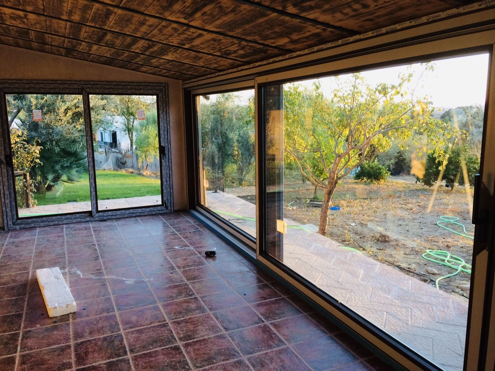
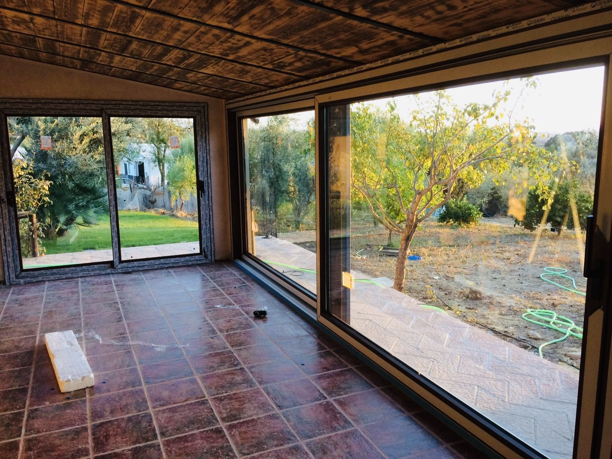

Ventanales de PVC GEALAN
Los ventanales de PVC GEALAN están diseñados para quienes buscan la máxima amplitud, luminosidad y elegancia en su hogar. Perfectos para patios, terrazas y grandes aperturas, combinan tecnología de vanguardia con un diseño moderno y funcional.

Correderas GEALAN
La línea de correderas GEALAN ofrece soluciones para ventanales de gran tamaño, permitiendo una apertura suave y ligera. Gracias a su diseño, facilitan la entrada de luz natural y crean una conexión armoniosa entre el interior y el exterior. Son ideales para terrazas y jardines.
GEALAN Smovio
La innovadora gama Smovio de GEALAN combina la practicidad de un sistema corredero con el sellado de una ventana abatible. Es la opción ideal para ventanales de patios o terrazas donde se necesita aislamiento térmico y acústico sin renunciar al diseño moderno y la facilidad de uso.
Galería
 

Colores disponibles

Blanco

Roble

Gris Antracita